Scenario Forge is easiest to understand when you see the maps it can produce, not when you read a wall of feature names.
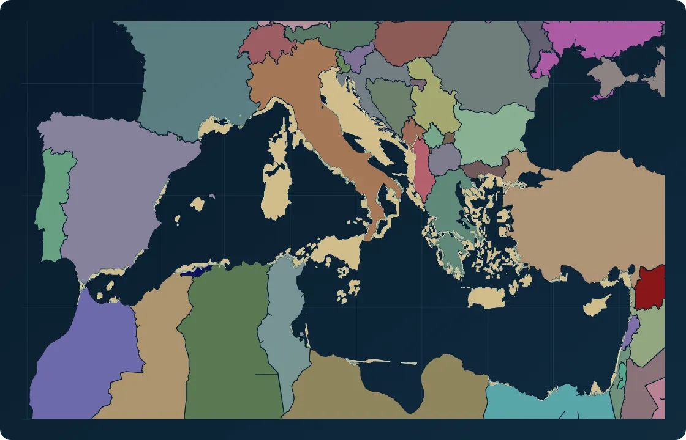
Alternate history baseline
Start from a world that already changed.
Use scenario geography like Atlantropa as the baseline, then keep ownership and physical context visible in the same frame.
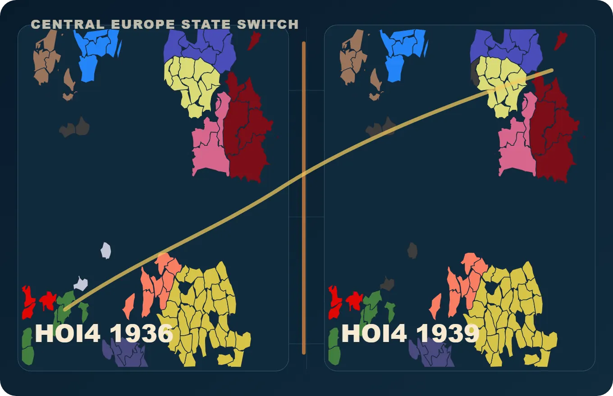
Scenario state switch
Compare the same region across bookmarks.
Put 1936 and 1939 ownership side by side so political change reads as geography, not just a list of tags.
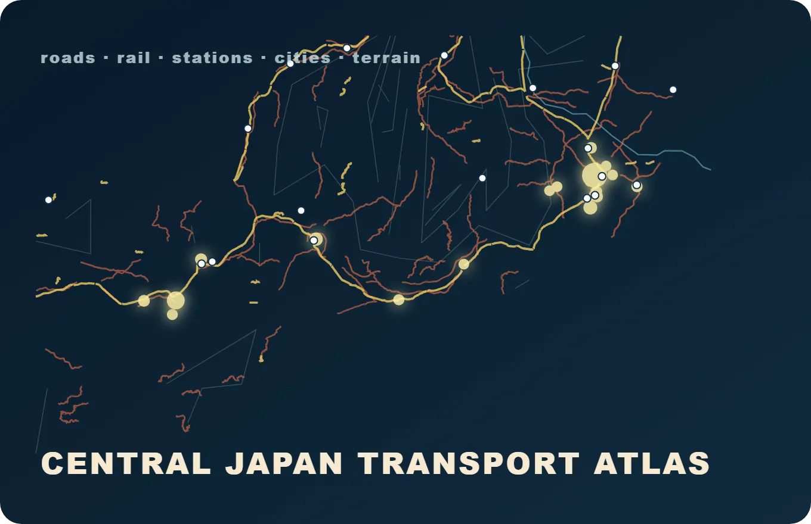
Atlas-style output
Turn workbench layers into a finished corridor map.
Combine roads, rail, stations, city lights, rivers, and terrain into a compact output that feels ready to publish.
Product story
From world state to export-ready map.
Follow the same path a creator takes: choose a baseline, switch the scenario state, add context, inspect evidence, and export a finished map.
Scenario Forge story stage
Baseline selectedStart from a named public baseline.
The map begins from a scenario frame with known ownership and geography.
Source-backed evidence
public baselines
5
Europe political features
7177
Japan road + rail source features
5899
cataloged assets
658
corridor output marks
183
Cartography showcase
A scenario page should look like it already knows how maps behave.
This Europe view is generated from the same scenario, topology, capital, and rail data that power the map workbench.
HOI4 1936 Europe
Political ownership comes from the 1936 scenario data.
The map colors European territory through Scenario Forge's HOI4 1936 ownership table and country palette.
Generated from HOI4 1936 ownership, Europe topology, capital hints, and Europe rail data.
Live product preview
Preview real transport layers before opening the editor.
The Japan view samples real Japan transport and geography data so visitors can read the map before opening the editor.
Japan pilot preview
A readable sample of Japan roads, rail, cities, terrain, rivers, and night-light context.
Interactive preview
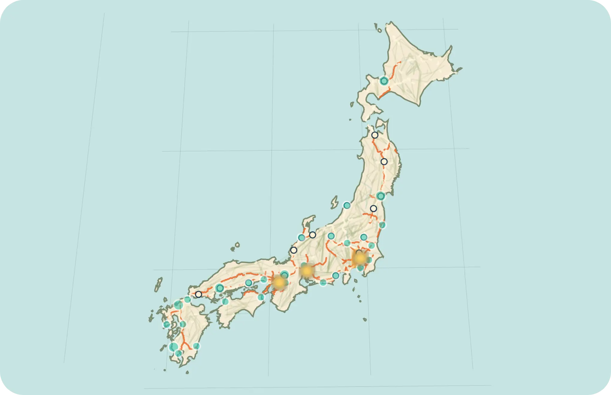
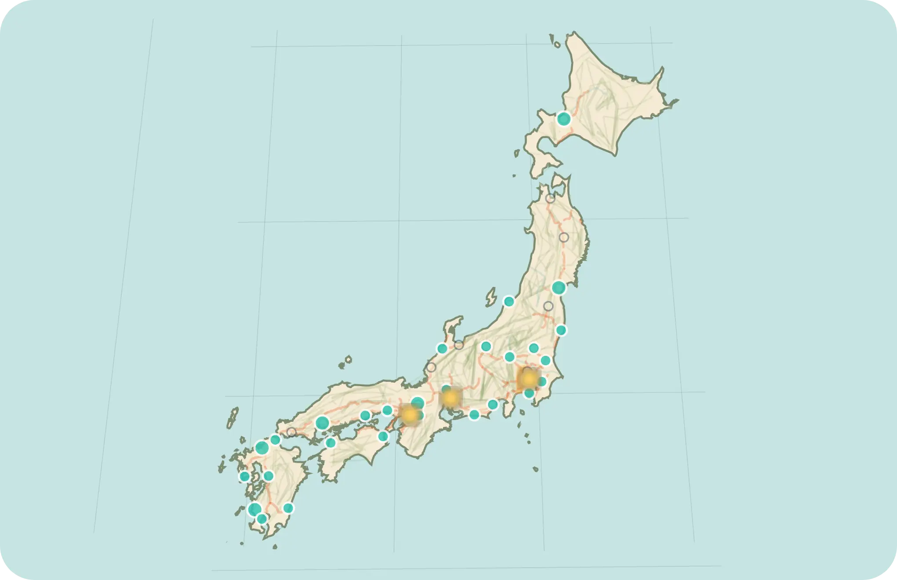
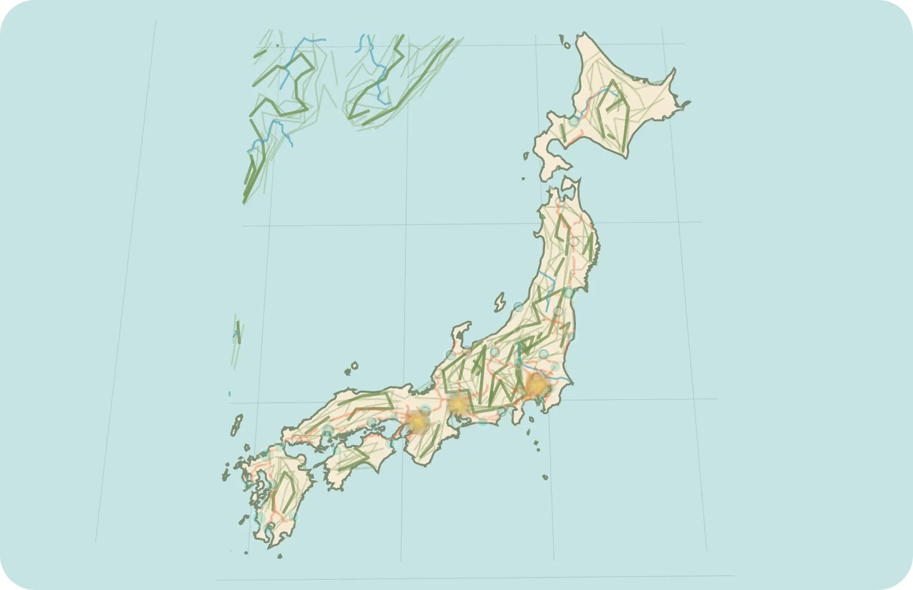
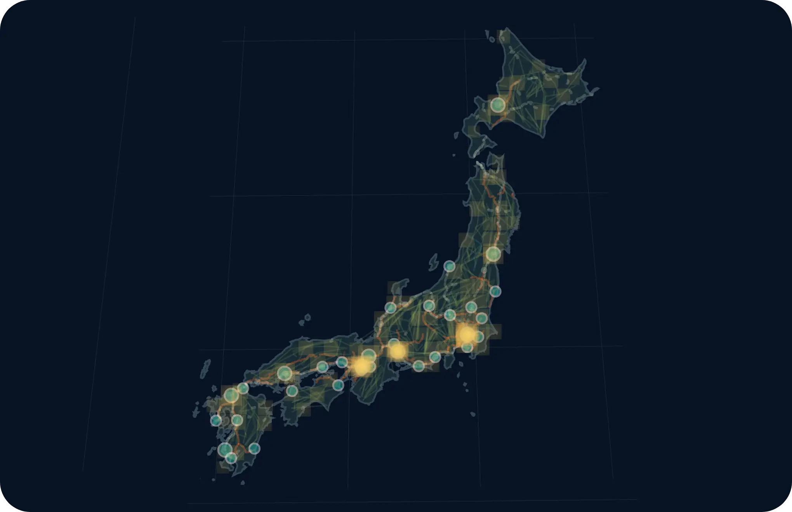
Japan road + rail
The preview renders 260 road lines and 160 rail lines from Japan transport data.
Use this view to judge corridor density, railway continuity, and major station anchors before entering the editor.
City points
The city mode samples 32 recognizable anchors from the Japan city catalog.
City points make the transport preview easier to read by tying routes to familiar regional hubs.
Relief and physical context
Terrain mode adds real contour and river data around the Japan map base.
Physical context helps users see where corridors meet mountains, coastlines, and river systems.
Night-light layer
Night mode samples 88 light points from Black Marble and historical city anchors.
This mode shows how population and activity context can sit on the same transport geography.
Why Scenario Forge
Stop stitching five tools together to tell one geopolitical story.
Typical workflow
×One tool for painting political states.
×Another for labels or overlays.
×Another for exports or presentation cleanup.
×No real scenario baseline to start from.
Scenario Forge
✓Begin from a named world state.
✓Repaint ownership, controller, and frontline logic inside one workspace.
✓Layer context and presentation surfaces without leaving the tool.
✓Save the project or export the result when the story is ready.
Workflow
A short path from baseline to story-ready map.
01
Start from a world state
Use the five public baselines like Blank Map, Modern World, HOI4 1936, HOI4 1939, or TNO 1962 to begin from an explicit scenario frame.
02
Repaint control and ownership
Shift who owns what, who controls what, and how the map should read politically without rebuilding the whole surface from scratch.
03
Layer context and export
Add rivers, urban areas, city points, water regions, special zones, legends, and visual refinements, then export a clean PNG or JPG snapshot.
Product capabilities
Organized like a serious map product.
Each capability group supports a real creator workflow, from editing political states to exporting presentation maps.
Cartographic design
Layer order, color palettes, borders, labels, legends, city points, water regions, and export-ready map presentation.
Mod palettes for HOI4, Kaiserreich, TNO, Red Flood, and Vanilla-style maps.
Export workbench with 1x-4x presentation snapshots.
Scenario editing
Named world states, ownership, controller, frontlines, special regions, country metadata, and scenario-aware startup.
80-step undo and redo for map editing sessions.
Administrative districts and hierarchy editing for deep scenario work.
Spatial data and analysis
Boundaries, settlements, hierarchy data, physical context, and source links that help maps stay readable and trustworthy.
Transport and infrastructure
Roads and rail are the strongest public transport map paths. Airports and ports feed overview context, while energy, industry, logistics, and resources remain workbench preview families.
Japan roads and rail, plus airport, port, energy, industry, logistics, and resource preview families.
Source links help reviewers understand where infrastructure layers come from.
Imagery and context layers
Relief, bathymetry, contours, rivers, night lights, urban areas, and physical semantics for richer map reading.
Project management
Local save/load, bilingual UI, export workflows, and future team surfaces for sharing map projects.
Built for
People who need the map to carry the scenario.
01Alternate-history creators02HOI4, TNO, and Kaiserreich modders03Scenario and campaign designers04Geopolitical storytellers05Researchers and presenters
Scenario templates
Start from a real world state.
The first action can be choosing one of five public baselines. HGO 1936 stays available as a developer/local preview.
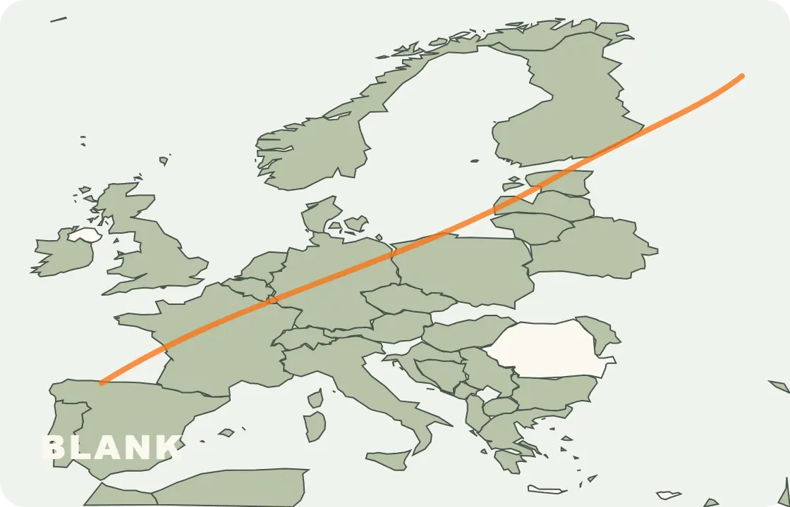
Clean base
Blank Map
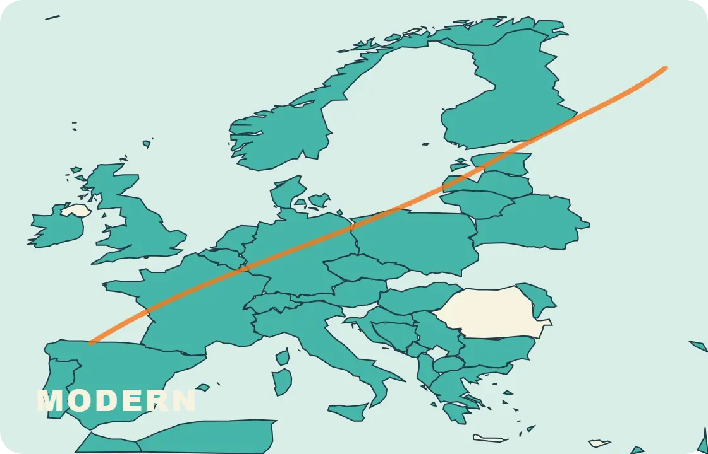
Current world
Modern World
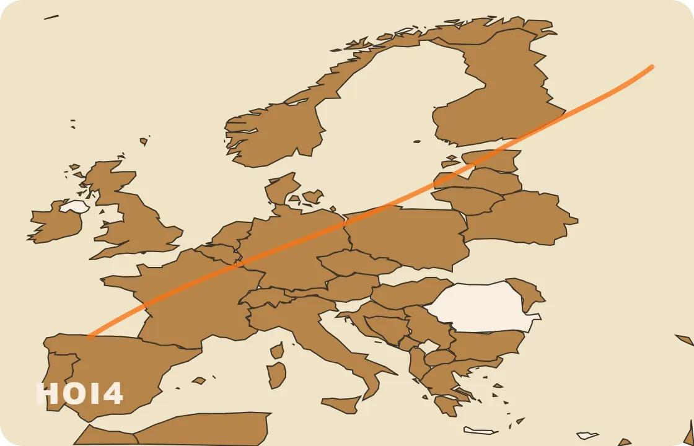
Strategy baseline
HOI4 1936 / 1939
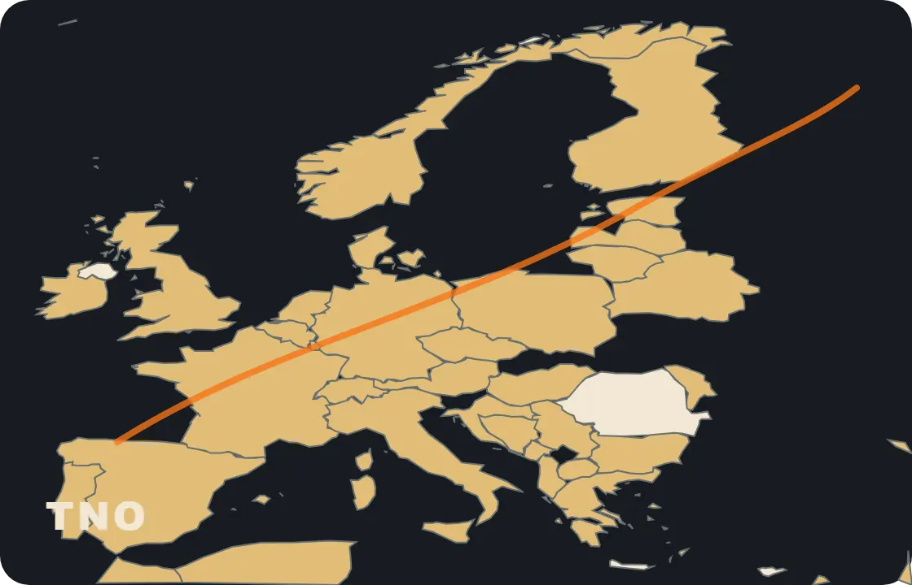
Alternate history
TNO 1962
Data foundation
A map product needs visible data trust.
Scenario Forge keeps source links close to the map experience, so viewers can understand where boundaries, places, terrain, and transport layers come from.
Base geography
Boundaries and populated places
Natural Earth, geoBoundaries, GeoNames, hierarchy data, and country policy assets provide the political and settlement backbone.
Physical context
Relief, bathymetry, rivers, and semantics
NOAA ETOPO, bathymetry packs, contours, rivers, and physical semantics help maps read like geography instead of flat color blocks.
Infrastructure
Transport layers you can inspect
Japan roads and railways appear as visible map layers. Airports and ports feed overview context; more infrastructure views can grow from the same product pattern.
Governance
Traceable from source to map
Every public source button points to a real dataset family, making the data foundation easier to evaluate.
Editions and license direction
Explain how people can try it today and where the product can grow.
Available now
Live demo
Open the browser workbench, explore public baselines, tune layers, and export presentation snapshots.
Local creator workflow
Project files and traceable data
Keep scenario work local, inspect map layers, and use source links when a map needs a clear data trail.
Future direction
Team and cloud surfaces
Future product packaging can extend the backend direction into cloud saves, shared project spaces, permissioned publishing, and larger data packs.
Sample use cases
Show the workflows a map product should own.
Campaign atlas
Build a TNO 1962 political briefing map.
Start from a named world state, adjust presentation layers, add city and water context, and export a map ready for a scenario brief.
Infrastructure review
Inspect Japan road and rail density.
Use the preview to explain corridors, rail hubs, ports, and transport readiness before deeper editor work.
Presentation map pack
Turn one geography into multiple story views.
Move between political color, terrain, night-light, city, and infrastructure views to prepare a consistent visual set.
FAQ
Answer the questions a real map product page creates.
Is Scenario Forge a GIS tool or a map editor?
It is a scenario-first map workbench. It borrows GIS-style data discipline, then focuses the interface around political scenarios and presentation output.
What data sources does it use?
The current asset families include Natural Earth, geoBoundaries, GeoNames, NOAA ETOPO, NASA Black Marble style night-light assets, OpenStreetMap, Geofabrik, and country transport sources.
Can it work offline?
The public demo can run as a static web app in the browser. Larger refresh and sharing workflows belong to the local creator setup.
What can I export?
The editor supports presentation snapshots such as PNG and JPG, with layer styling kept close to the map workspace.
How mature are the transport layers?
Japan roads and railways are the clearest current transport view. Airports, ports, energy, industry, logistics, and resources are workbench/preview families.
What is the license model?
The current public surface is a live demo and repository. Creator, team, and cloud packaging are future product directions.
In progress
Transparent about what is ready and what is not.
Scenario Forge already has a strong core. Some transport-related surfaces are still intentionally presented as work in progress.
Active preview
Transport workbench
The workbench already lets users inspect transport layers and understand route density inside the map experience.
Ready view
Japan road preview
Currently the clearest transport view available in the product.
Shell stage
Rail and other infrastructure families
Road and rail stay the strongest public transport paths while airport, port, energy, industry, logistics, and resource views expand from the same map-layer pattern.
What’s new
A product surface that keeps moving.
Product-grade landing showcase
The homepage now gives visitors a faster path from product promise to visible maps, use cases, and answers.
Cloud save foundation
The local creator setup now supports a clearer path toward future shared project spaces.
Map data foundation
The checked-in catalog tracks 658 assets across geography, transport, palettes, and runtime views.
Ready to open the workbench?
Step into the editor when you want to move from idea to map.
The showcase explains the product. The editor is where you actually shape the scenario.